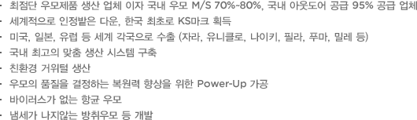
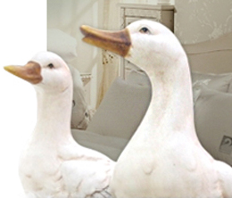
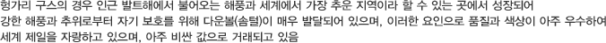
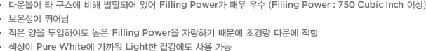
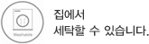

컨텐츠

- 최점단 우모제품 생산 업체 이자 국내 우모 M/S 70%~80%, 국내 아웃도어 공급 95% 공급 업체
- 세계적으로 인정밭은 다운, 한국 최초로 KS마크 획득
- 미국, 일본, 유럽 등 세계 각국으로 수출 (자라, 유니클로, 나이키, 필라, 푸마, 밀레 등)
- 국내 최고의 맞춤 생산 시스템 구축
- 친환경 거위털 생산
- 우모의 품질을 결정하는 복원력 향상을 위한 Power-Up 가공
- 바이러스가 없는 항균 우모
- 냄세가 나지않는 방취우모 등 개발



- 다운볼이 타 구스에 비해 발달되어 있어 Filling Power가 매우 우수 (Filling Power : 750 Cubic Inch 이상)
- 보온성이 뛰어남
- 적은 양을 투입하여도 높은 Filling Power을 자랑하기 때문에 초경량 다운에 적합
- 색상이 Pure White에 가까워 Light한 겉감에도 사용 가능
프리미엄 헝가리언 구스 퓨어 화이트 3대 특징
- 